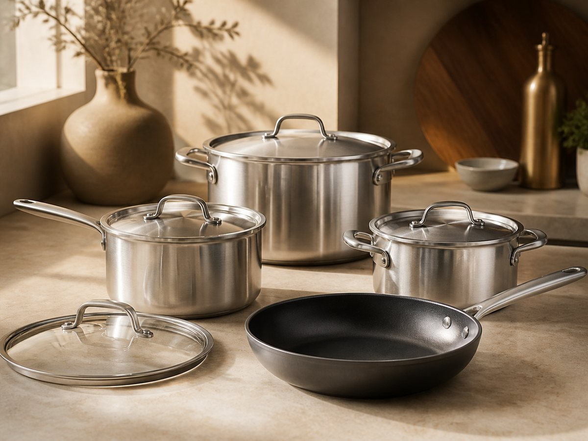
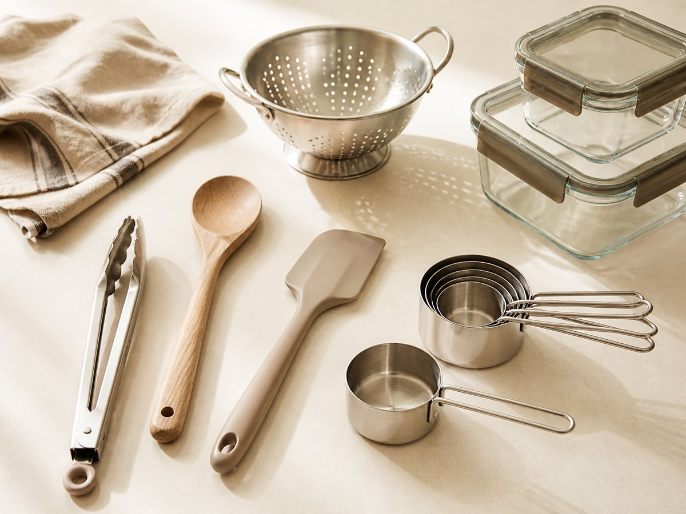
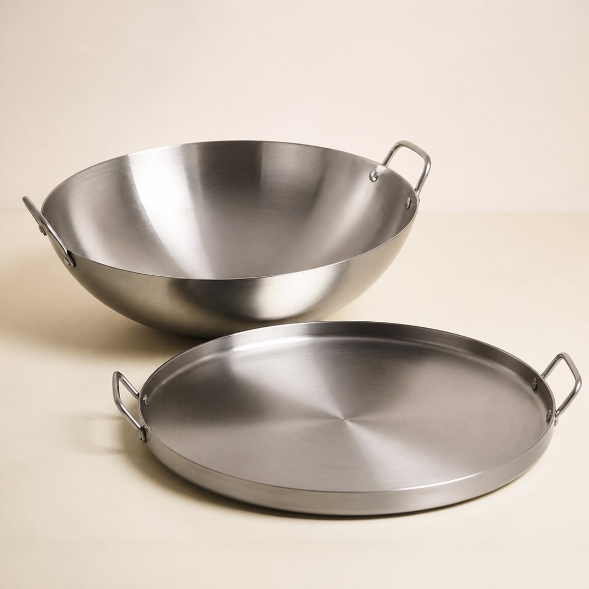
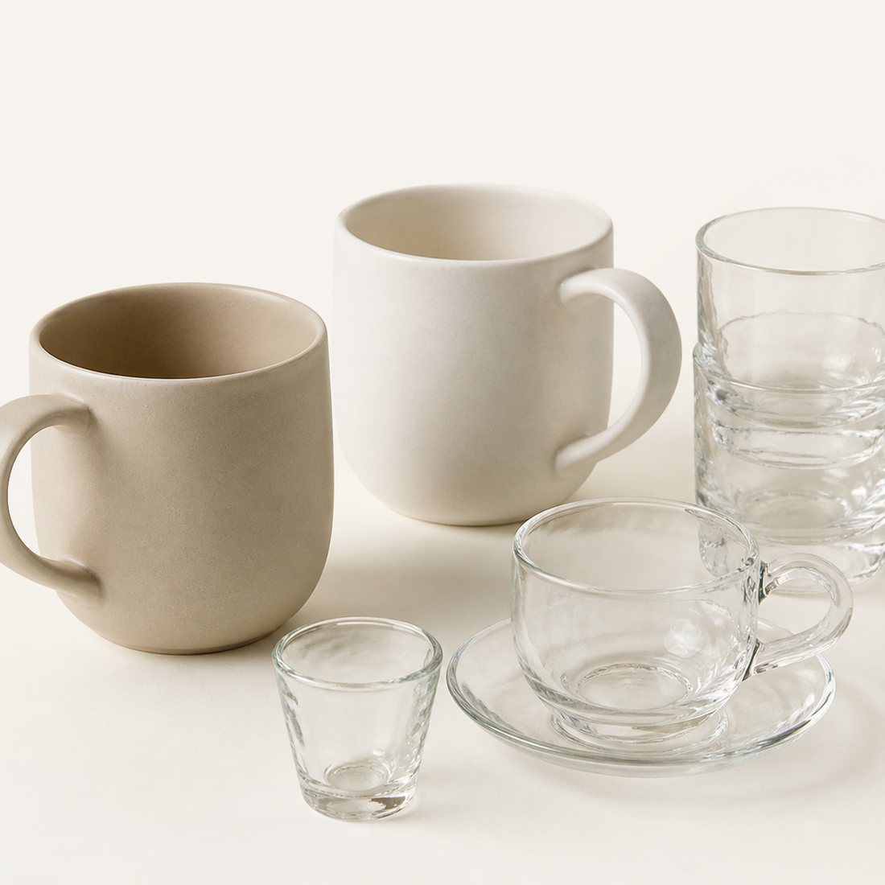
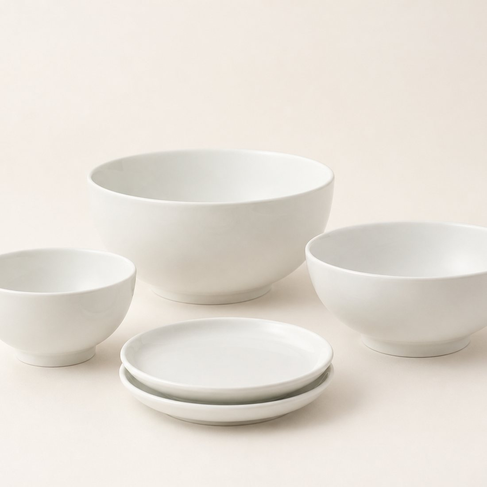
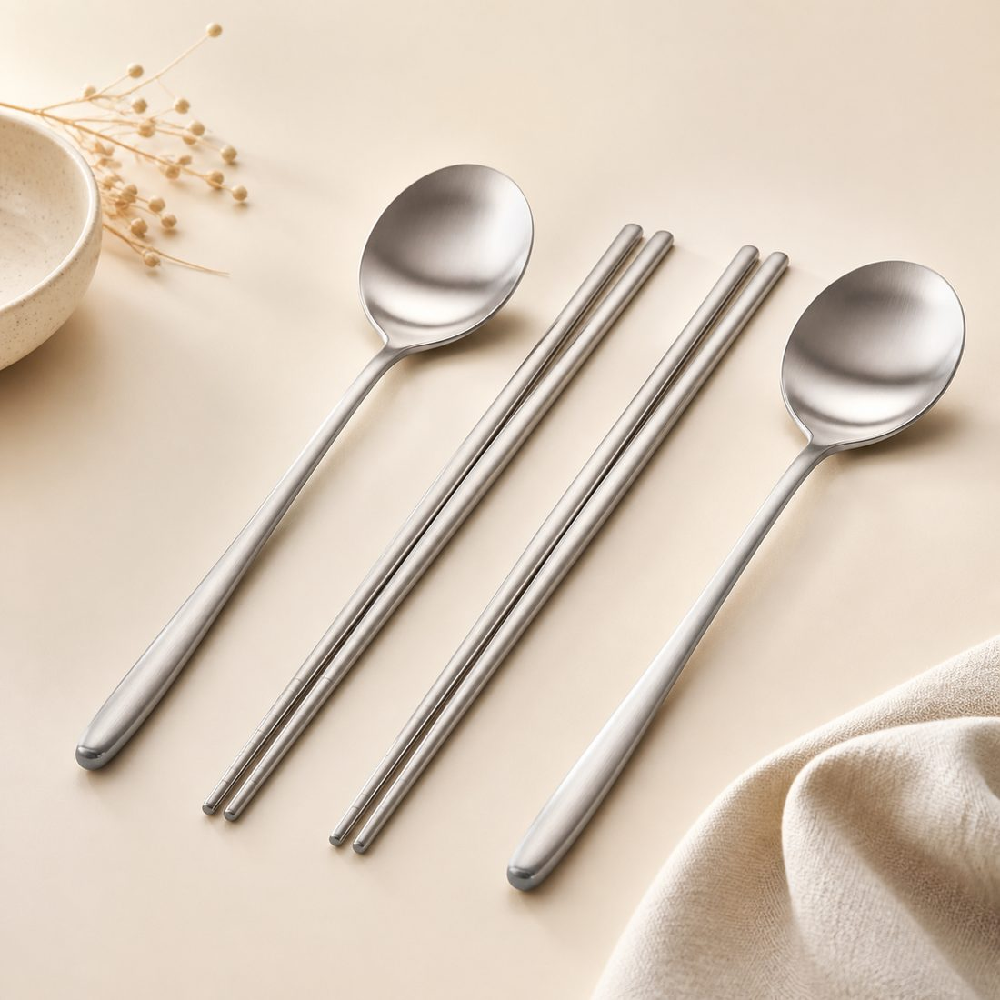
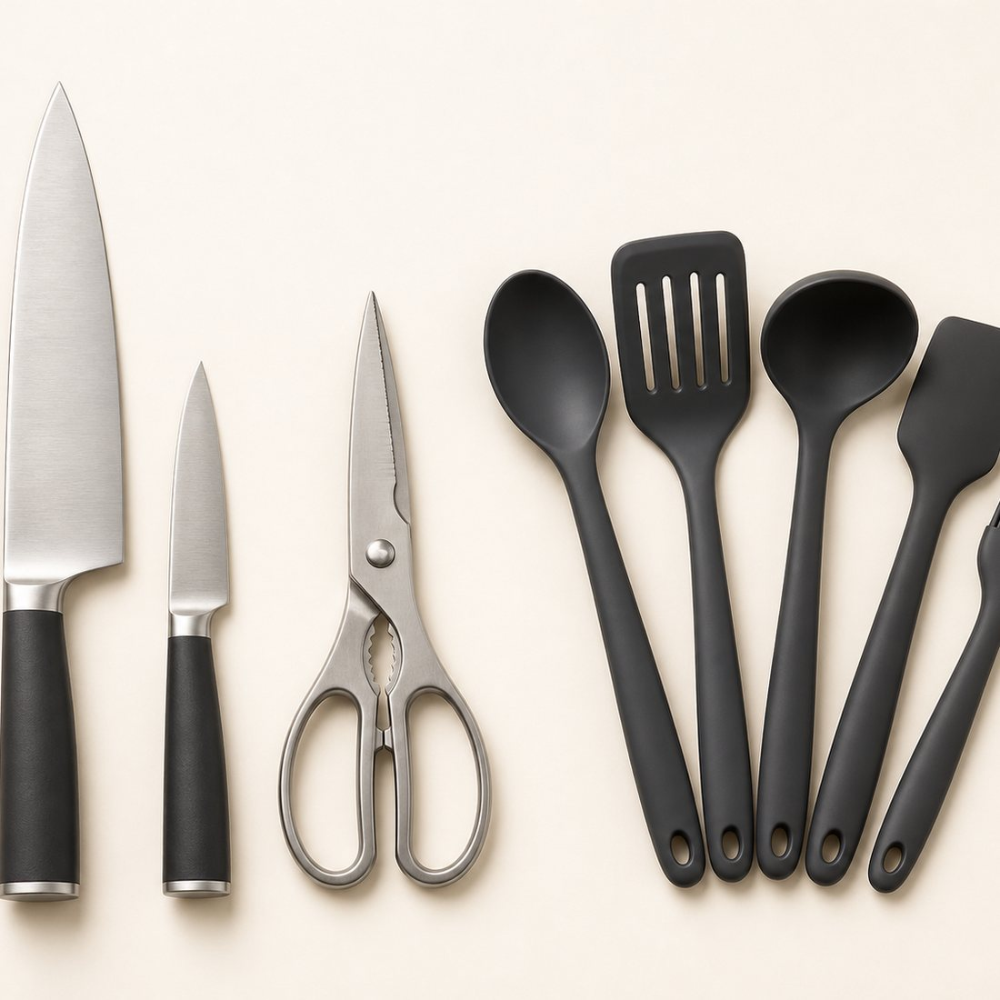
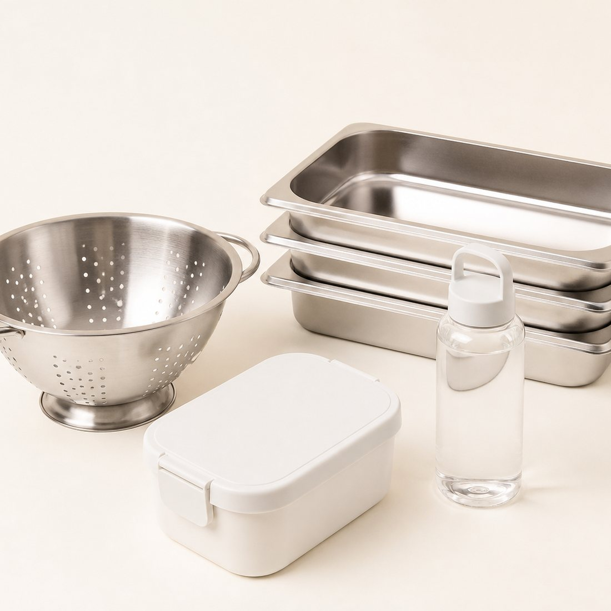
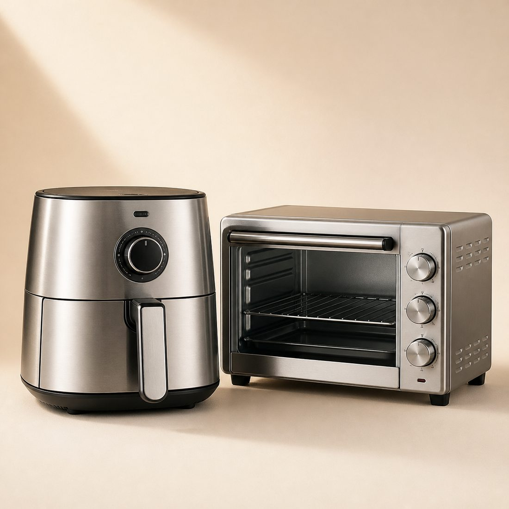

마트 납품
서원유통(탑마트), 농협하나로마트, 우리마트, 홀마트 같은 지역 유통 채널에 주방·생활용품을 정기적으로 납품합니다. 매장별 상품 구성과 행사 일정에 맞춰 발주 단위와 납기를 맞춥니다.
주식회사 그랑쉐프는 주방용품을 공급하는 유통기업입니다. 냄비·프라이팬 같은 가정용품부터 업소용 대형 볶음솥·전판, 밧드까지 취급하며 부산·울산·경남의 마트와 식당·급식소, 기업·관공서에 납품합니다.

01회사소개
그랑쉐프는 2001년 부산에서 문을 열었습니다. 부산 강서구 대저1동에 본사와 사무실을 두고 주방용품과 생활용품을 기획·유통하고, 플라스틱 성형용기와 주방용품을 직접 제조합니다.
부산·울산·경남의 마트와 식당·급식소, 기업·공공기관에 물건을 공급해 왔습니다. 제품을 고를 때 보는 기준은 두 가지입니다. 오래 써도 불편하지 않을 것, 필요한 곳에 제때 도착할 것.
그랑쉐프(GRANDCHEF)와 그랜드쿡(GRANDCOOK), 두 개의 자체 브랜드를 운영하고 그랑쉐프몰·종합주방몰 판매 채널로 공급합니다. 조리기물부터 식탁·생활용품까지 한 창구에서 보내드립니다.
02사업분야
마트 납품, 주방용품 유통, 특판상품, 신상품 제안 — 네 가지 일을 합니다. 매장에 오를 상품을 고르고 발주 단위와 납기를 맞추며, 부산·울산·경남은 직접 배송하고 정기 납품도 진행합니다.
서원유통(탑마트), 농협하나로마트, 우리마트, 홀마트 같은 지역 유통 채널에 주방·생활용품을 정기적으로 납품합니다. 매장별 상품 구성과 행사 일정에 맞춰 발주 단위와 납기를 맞춥니다.

냄비·프라이팬·주전자부터 식기·조리도구·밀폐용기까지 자체 브랜드 2종(그랑쉐프·그랜드쿡)과 협력 브랜드·거래처 41곳의 제품을 도소매로 공급합니다. 업소·급식용 대용량 기물도 함께 취급합니다.

기업 복지·명절 선물세트, 관공서 특판, 행사·판촉 물량을 상담으로 구성합니다. 냄비·프라이팬 세트부터 머그·밀폐용기까지 예산과 수량에 맞춰 포장과 라벨을 조정합니다.

거래처의 매장 구성과 판매 흐름을 보고 신상품과 구성을 제안합니다. 요청하시면 샘플·카탈로그·사진 자료를 보내드리고, 시즌에 맞춘 품목 교체도 함께 상담합니다.
03주요 납품처
지역 유통 채널과 기업·공공기관에 주방·생활용품을 공급합니다. 매장 상품 구성부터 행사·판촉, 기관 단위 특판까지 상담으로 맞춥니다.
대기업 사내 복지·비품 채널과 관공서 특판 납품을 진행합니다. 정기 납품, 행사·판촉 물량, 기관 단위 발주까지 상담으로 맞춥니다.
※ 거래처는 납품 채널 기준이며, 거래 조건과 단가는 별도 협의로 정합니다.
04납품 안내
업장에 따라 필요한 구성이 다릅니다. 상담이 많은 세 가지 경우를 예로 정리했습니다. 품목과 수량은 매장 규모와 예산에 맞춰 다시 짭니다.
개업 준비 · 주방 기물 일괄
급식실 노후 기물 교체 · 정기 보충
명절·창립기념 · 단체 선물
한 품목만 발주하는 단일 발주와 여러 품목을 묶는 혼합 발주 모두 상담으로 진행합니다. 최소 수량과 박스 단위는 품목·제조사에 따라 다릅니다. 희망 품목과 수량을 알려주시면 가능한 단위로 맞춰 안내드립니다.
부산·울산·경남은 직접 배송하고, 주 단위·월 단위 정기 납품도 함께 진행합니다. 그 밖의 지역은 품목과 물량에 따라 배송 방법을 협의해 안내드립니다.
사업자 거래는 세금계산서 발행 기준으로 진행하며, 법인카드 결제도 상담으로 맞춥니다. 관공서·기업은 기관에서 요구하는 정산 서류와 절차를 확인해 진행합니다. 결제 조건은 거래 형태와 품목에 따라 별도로 정합니다.
제품을 받으신 뒤 상태를 확인하시고, 파손·불량이 있으면 사진과 함께 대표전화나 이메일로 알려주세요. 확인 후 교환·보완 절차를 안내드립니다. 운송 중 파손은 배송 상태를 함께 확인합니다.
기재한 41개 협력 브랜드·거래처와 자체 브랜드 2종 외에도 수십여 개 제조·유통사와 거래하고 있습니다. 찾으시는 브랜드·규격·모델명을 알려주시면 취급 가능 여부와 납기를 확인해 안내드립니다.
상담 시 요청하시면 품목에 따라 샘플·카탈로그·사진 자료를 보내드립니다. 방문 상담을 원하시면 미리 연락 주시면 담당자가 준비해 두겠습니다.
※ 위 내용은 일반적인 안내입니다. 수량·기간·금액 등 구체적인 조건은 품목과 거래 형태에 따라 달라지므로 상담으로 정합니다.
05취급 품목
식당·급식소에서 쓰는 대형 볶음솥과 전판, 밧드·튀김 바스켓부터 가정에서 쓰는 주방용품까지 열한 개 분류로 나누어 갖춥니다. 분류를 선택하면 브랜드별 대표 품목을 보고, 여러 품목을 담아 견적을 문의할 수 있습니다.

업소 · 급식용
대형 볶음솥(36~60cm)과 전판, 업소용 코팅팬·웍, 스테인리스·PC 밧드와 튀김 바스켓, 뚝배기까지 — 장사하는 주방에 필요한 기물과 조리용품, 식자재 부자재·소모품을 공급합니다. 규격과 수량을 알려주시면 납기와 발주 단위까지 맞춰 드립니다.
업소용 상품 보기가정 · 일반용









※ 품목 구성은 거래처와 시즌에 따라 달라집니다. 취급 여부는 문의로 확인해 주세요. 이미지는 품목 예시이며 실제 상품과 다를 수 있습니다.
06취급 브랜드
그랑쉐프(GRANDCHEF)·그랜드쿡(GRANDCOOK) 두 자체 브랜드와 협력 브랜드·거래처 41곳의 제품을 취급합니다. 브랜드를 선택하시면 브랜드 안내와 대표 취급 제품, 공식 홈페이지 링크를 보실 수 있습니다.
취급 브랜드 안내
분류를 고르거나 브랜드를 선택하시면 브랜드 안내, 대표 취급 제품, 공식 홈페이지 링크가 표시됩니다.
목록에 없는 브랜드와 품목도 상담으로 확인해 드립니다.
+ 외 수십여 개 협력 브랜드 기재한 41개 협력 브랜드·거래처 외에도 수십여 개 국내·외 제조사·협력사 제품을 공급합니다. 자체 브랜드 그랑쉐프·그랜드쿡 제품은 위 목록의 '자체 브랜드'에서 확인하실 수 있습니다. 목록에 없는 품목도 문의로 확인해 드립니다.
※ 대표 제품은 각 브랜드 공식 홈페이지에 게시된 품목과 거래처 납품 품목을 기준으로 정리했습니다. 자체 브랜드(그랑쉐프·그랜드쿡)는 회사가 직접 기획·공급하는 브랜드입니다. 실제 취급 여부와 규격·발주 단위는 시즌과 거래처에 따라 달라지므로 문의로 확인해 주세요. 브랜드별 주력 품목과 분류별 대표 품목은 취급상품에서 품목 수가 많은 순서로 정리해 두었습니다. 공식 홈페이지가 없거나 확인되지 않는 업체는 '미운영·미확인'으로 표기했습니다.
07품질·유통
품질과 공급에 대해 저희가 지키는 원칙을 정리했습니다.
가스용인지 인덕션용인지, 어떤 열과 세제를 견디는지부터 확인합니다. 바닥과 모서리처럼 눈에 덜 띄는 부분도 같은 기준으로 봅니다.
한 번 잘 만드는 것보다 같은 품질로 계속 보내는 일이 어렵습니다. 검수 기준을 정해 두고 같은 결과가 나오도록 관리합니다.
제조와 유통을 함께 하기 때문에 재고와 일정을 한자리에서 확인합니다. 행사 일정이나 발주 단위가 바뀌어도 빠르게 답을 드립니다.
한 번 사서 오래 쓰는 물건을 기준으로 고릅니다. 규격을 단순하게 유지해 매장에서도, 집에서도 고르기 쉽게 합니다.
08오시는 길
본사와 사무실이 함께 있습니다. 방문 전에 연락 주시면 담당자가 안내드립니다.
09납품 문의
품목, 수량, 납기를 알려주시면 담당자가 확인 후 연락드립니다. 마트 행사·판촉은 물론 식당·급식소의 대용량 주문도 함께 상담합니다. 부산·울산·경남은 직배송, 정기 납품도 가능합니다. 급하신 문의는 전화가 가장 빠릅니다.